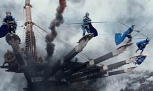
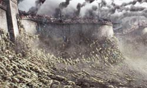
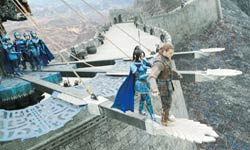
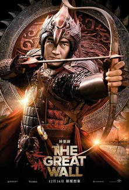
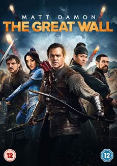
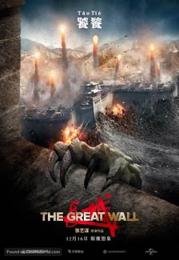
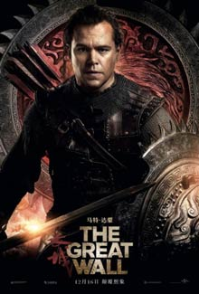
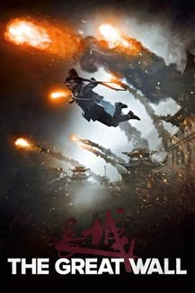

The first English-language film in Zhang’s career was also the one with the biggest budget, with $135 million at his disposal. However, the film ended up being a commercial failure. Principal photography began in March 2015, on location in Qingdao. It was the most expensive film ever shot entirely in China. Three walls were built during production as they could not shoot on the actual Great Wall itself. During the filmmaking, the director said the most impressive part for him was the presence of so many translators to handle communication, as he assembled an international crew for the filming. More than 100 on-set translators worked with the various cast and crew members.

The story takes place in the Song dynasty, during the reign of the Renzong Emperor. The two survivors of a smuggling group looking for gunpowder, end up in imprisoned in the Great Wall, where they realise the true reason behind its construction. Eventually, and as a wave of monsters is about to attack China, the two smugglers join forces with the Chinese army in order to face this seemingly unstoppable force.




Because some of the characters, including the protagonist played by Matt Damon, are white in a film set in medieval China, the film was accused of 'whitewashing' and using the white saviour narrative prior to its release. However, The Washington Post, wrote that "early concerns about Damon playing a 'white saviour' in the film turn out to be unfounded: his character, a mercenary soldier, is heroic, but also clearly a foil for the superior principles and courage of his Chinese allies."

